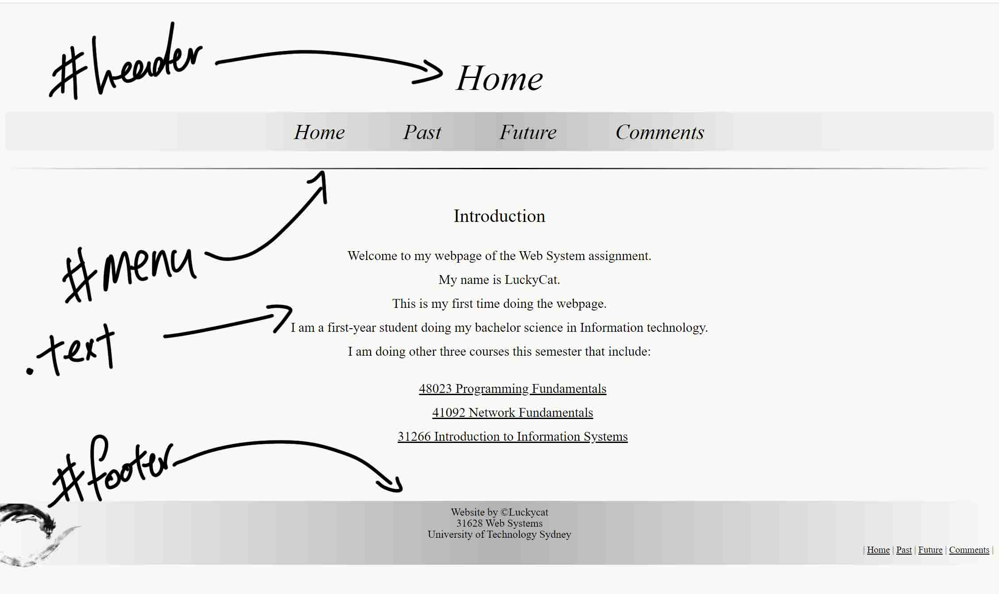
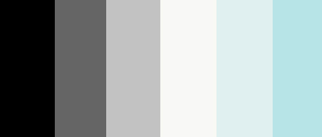
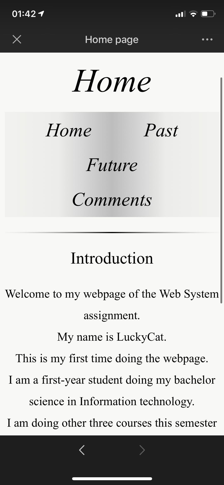

Technical
Structure of Website
This Website has four HTML file and one CSS file. See table below
| Filename | Title | File type | Description |
|---|---|---|---|
| index.html | Home | HTML file | The home page of this website |
| past.html | Past | HTML file | Description of my past |
| future.html | Future | HTML file | Description of my future expectation |
| comments.html | Comments | HTML file | Description of how is website was built |
| websystem.css | None | CSS file | Controls the layout and style of this website |
Webpage Structure
In general, the website is structured by four parts, heading, menu, contents and footer. Each of them are divided by <div> element.
For these four main sections, I created three ids and one class.These containers helps me to change website style more easily through an external CSS file in terms of consistency. Which means, I do not need to change every HTML document when I have new idea about the style.First of all, I used background-color: rgb(248, 248, 245) in CSS file to set background color for all four webpages.HTML elements I used in the body of the HTML file. See table below:
| Element | Description |
|---|---|
| <p></p> | Particularlly used for paragraphs, but I also used it for some subheading |
| <div></div> | This elements is used as a container for HTML elememts. Often I used it for applying classes in the CSS file |
| <span></span> | Similar function to div. but this only used inside div container |
| <img> | Used for import images and gives alternative text (alt="") when image is corrupted |
| <table></table> | Used together with <th></th>,<tr></tr>,<td></td>, to create table in the website |
| <ul></ul> and <ol></ol> | Used together with <li></li> to create ordered or/and unordered list in the website |
| <a></a> | To insert a link |
| <pre></pre> | Used for preformatted text, but in this website I only used it for the layout not text. The text formation I used class .block |
| <h1></h1> | Used for heading |
Header
In the header section contains the title of the webpage, in this case 'Home'.The title I used <p> </p>, but in the CSS file I used id(#header) that contains various style elements to adjust it. See table below.
| Property | Description |
|---|---|
| text-align: center; | These properties are used to adjust the position of the header |
| margin-top: 80px; | |
| margin-bottom: 20px; | |
| font-style: italic; | These properties are used to adjust the font size and style |
| font-weight: lighter; | |
| font-size: 60px; |
Menu
In the menu section contains four links which are home, past, future and comments.I used list element for the links which used < a > < /a> and used display: inline-block to make them horizontal. Similarly, this menu section also has an id (#toplink) that contains various style properties to adjust it. See table below.
| Property | Description |
|---|---|
| font-style: italic; | These properties are used to adjust the font size and styler |
| font-size: 40px; | |
| text-align: center; | These properties are used to adjust the position of the text |
| margin: auto; | |
| text-overflow: ellipsis; | These properties are used to control the text overflow |
| overflow: hidden; |
Content
In the content section it contains the content of the webpage. I used various elements in this section such as < table > < /table>, < ul > < /ul>, < ol > < /ol>, < p > < /p> < img > and < a > < /a>. In the class .text I used properties: text-align, margin, line-height and font-size to control the layout of the content.
Footer
This section contains three parts: text and link, and they are all in the #footer. The link part I uses classes .botlink and .link for the style and the text part is similar to content section. Then only difference is that the footer contains a background image. Since the background color cannot set its position, I uses background-image: linear-gradient to do the color and it can change its position. Properties such as padding, font-size, text-align, line-height, are used for the layout of this part.
Hyper links
I used "a:" properties such as a:link, a:visited, a:hover and a:active, and text related properties to control the style of the hyper links.
Main CSS configuration
| Name | Type | Description |
|---|---|---|
| body{} | Element | Set background color of rgb(248, 248, 245) |
| #header{} | Id | Changes font style to 'Times New Roman'with italic and lighter. Adjust the font size to 55px and the position to center. |
| #toplink{} | Id | Changes font style with italic and font size to 32px. Controls the text-over flow. |
| #imgbg{} | Id | Import image and adjust its size and position. |
| #footer{} | Id | Sets up a background and arrange the layout of the text |
| .text{} | Class | To adjust the style of main content text |
| .link li{}, .inside{}, .nodot{} and botlink{} | Class | These classes are used to adjust the layout of links. |
| .subheader{} and .subheader2{} | Class | These two classes are used for two different header styles including colour and font size. |
| .t table,th,td{} | Class | This is used to add 1px solid black border to the table and adjust table’s position. |
| .tpl | Class | Contains li a{} and ul{}. The purpose of this class its to do the style of menu bar. |
Aesthetics
The website design is followed instructions on Webstyleguide.The design philosophy of this website is minimalism. I also contain some Chinese traditional elements (Chinese ink painting) as a logo at bottom of the website. The purpose of that is to give audience something new, as everthing in text might be very boring. The structure of the website mainly is centralized and leave some empty space for both right and left side of the page which inspired by this Website.As this webpage contains large proportion of text, this is easier for reader to read.
Colour
The colour of this page is Off-white tone I uses various colours that are close to white, >but not so boring as white to make this webpage looks simple and clean. Even there are some colours are not white, I would still use the low saturation level to make it not so striking.
Font
The font is ranged from 16px to 80px in order to make it bigger enough to the reader. As the background colour is light colour, I used black colours for the font to bring the high contrast. Moreover, different types of text such as heading, subheading and main text are styled by CSS file. Which means, they have same appearance and the reader will not be surprised, so provide the consistancy.
Interactivity
CSS is used to provide feedback when users visit the website. 'a:' is used on links to give feedback to the user such as changing colour and underline the links. Moreover, I have created a menu bar at the footer, so users do not need to scroll up to visit other pages in the site.
Accessibility
The font size is set to appropriate size and the high contrast created by black and white ensures the text is readable in various circumstances. Moreover, the line-height is adjusted to avoid all text are hard to read. Text-overflow control is used to ensure the webpage is readable after magnified to a certain extent.The alternitive description of images were added in case when images corrupted. The heading, menu, main content and footer are in the center of the webpage, and the main text is left aligned, so it is easier to read.The webpage is been tested from various browsers and devices such as tablet, laptop and smartphone.
